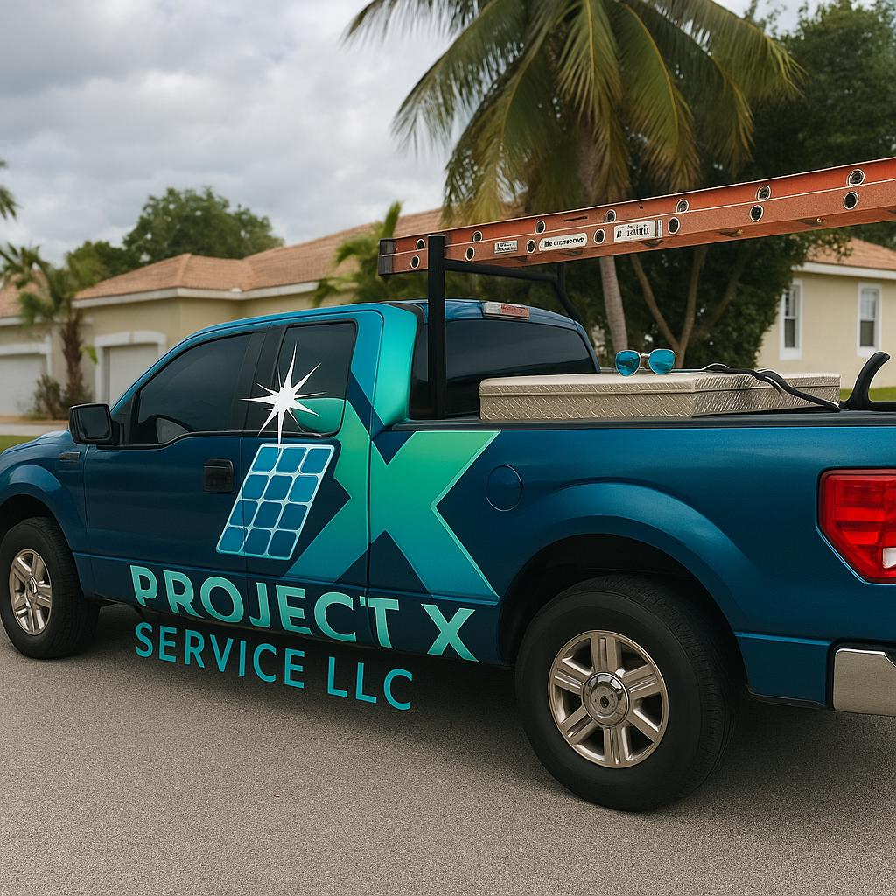
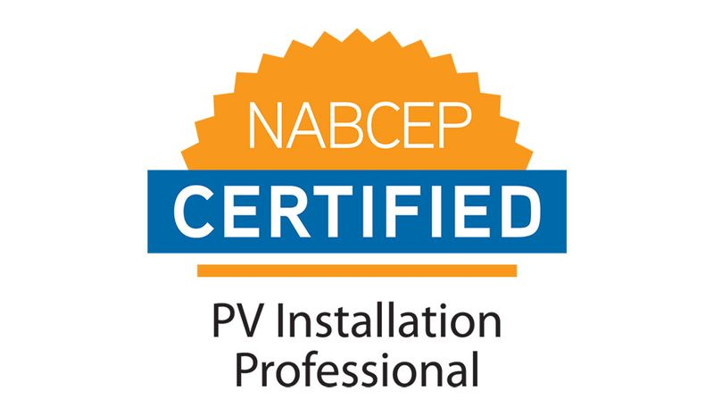
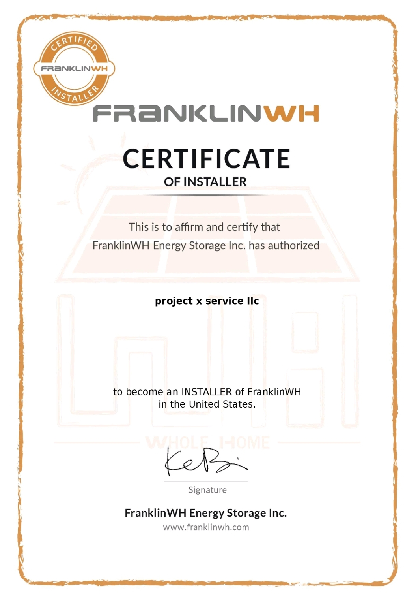
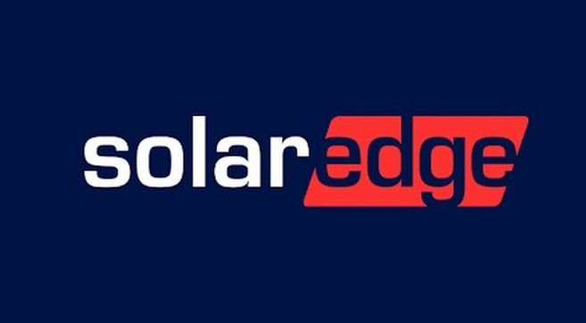

Project X Service LLC is a newly established company supported by over 10 years of hands-on experience in the solar industry. Our background includes residential and commercial solar installation, system commissioning, diagnostics, troubleshooting, and corrective service work throughout South Florida.
We have practical field experience working with inverters, microinverters, optimizers, AC/DC systems, mounting structures, and roof-integrated installations. Our focus is to deliver accurate system evaluations, proper technical procedures, and reliable service standards based on real-world industry experience.

We meet industry standards and maintain professional certifications that reflect our technical expertise and commitment to quality service.



We serve Broward County, Miami-Dade County, and surrounding areas. Send us your ZIP code and we’ll confirm availability.
We do both:
• Subcontractor services for solar companies (installation, service, RMA, deinstall/reinstall).
• Service for existing solar systems (diagnostics, preventive maintenance, repairs, monitoring support, inspections, and cleaning).
Preventive maintenance includes a general system inspection to help prevent failures and ensure performance: visual checks, basic operational verification, common failure points review, and recommendations.
We verify rails, attachments, roof penetrations, and the visible condition of the roof, along with the overall mounting condition. Photos can be provided upon request.
We perform solar diagnostics and troubleshooting to identify the root cause, including:
• Microinverters / inverter / optimizers.
• AC/DC wiring.
• Communication/monitoring issues.
Then we provide a clear repair plan before any additional work is performed.
Yes. With Monitoring Support & Verification, we review the monitoring platform, confirm data accuracy, and help troubleshoot connectivity and performance issues.
RMA is the manufacturer warranty replacement process. We assist with diagnosis, required documentation (photos/data), warranty processing, and replacement of defective equipment (microinverters, optimizers, inverters) when applicable.
Yes. We safely remove the solar system and reinstall it after the roof work is completed—ideal for roof replacements, remodels, or installation corrections.
Yes. We handle electrical repairs, communication issues, and low-production troubleshooting, as well as general system service.
It can, especially when panels are affected by dust, pollen, salt residue, stains, or bird droppings. Cleaning frequency typically ranges from every 6–12 months, or sooner if production drops.
We provide professional solar panel cleaning using safe methods and appropriate materials. We avoid harsh techniques that can damage the glass, seals, or mounting components.
Pricing depends on system size, roof height, access, system condition, and the service needed (diagnostics, RMA, reinstall, cleaning, etc.). For a fast quote, send your ZIP code, photos, and a brief description.
It depends on the scope. Many services (inspection, basic diagnostics, cleaning) are completed the same day. Deinstall/reinstall or more complex repairs may take longer. We provide an estimated timeframe before starting.
Yes. We offer Technical Inspections and Reports with photos, measurements, and recommendations—great for homeowners, solar companies, buyers, or warranty documentation.
Your name, phone number, ZIP code, service type, and (if possible) photos of the system/roof plus a monitoring screenshot or inverter error message.